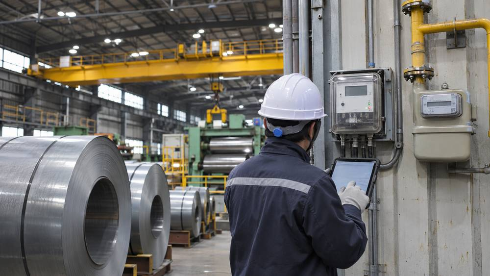

충남도, 수출 중소기업 탄소 배출량 산정·검증 돕는 전담조직 가동…철강·알루미늄부터

행정부지사 단장, 행정·기업·측정보고검증·정책자문 4개 분야 / 유럽연합 탄소국경조정제도 올해 1월 본격 시행, 12월까지 도 지원 전략
충청남도가 유럽연합(EU) 탄소국경조정제도(CBAM)에 대응해 도내 수출 중소기업의 탄소 배출량 산정과 검증을 돕는 '글로벌 탄소규제 대응 태스크포스(TF)'를 꾸렸다고 11월 16일 밝혔으며, 지방자치단체가 이런 전담조직을 둔 것은 처음이라고 설명했다. 태스크포스는 홍종완 행정부지사를 단장으로 행정지원·기업지원·배출량 측정·보고·검증(MRV)·정책자문 4개 분야로 나뉘고, 도 기후환경정책과 등과 한국환경공단·중소벤처기업진흥공단·한국산업단지공단·충남테크노파크가 함께한다.
도는 수출 품목과 EU 수출 여부, 기업 규모, MRV 대응 현황을 조사해 대상 기업 후보 데이터베이스를 만들고 철강·알루미늄 등 주요 업종부터 우선 지원 대상을 고른다. 배출량 산정·검증에 그치지 않고 계측기 구축과 에너지 효율 개선, 탄소 감축 설비 투자 지원까지 잇는다는 계획이다.
EU는 2023년 10월부터 2025년 12월까지 전환 기간을 거쳐 올해 1월부터 시멘트·철강·알루미늄·비료·전력·수소 수입품에 이 제도를 본격 적용하고 있으며, 수입자는 물품에 담긴 배출량만큼 인증서를 사서 내야 한다(인증서 가격은 EU 배출권거래제 경매 가격을 바탕으로 계산). 도는 다음 달까지 '충청남도 탄소국경조정제도(CBAM) 대응 및 중소기업 지원 전략'을 마련한다.
시민에너지 관점
배출량을 재고 검증받는 일은 전문 인력이 없는 중소기업에 가장 무거운 짐이어서, 측정부터 감축 투자까지 한 줄로 묶은 도의 지원 체계는 출발점으로 의미가 있다. 다만 배출량을 실제로 줄이는 길은 결국 공장이 쓰는 에너지를 바꾸는 데 있다. 산업단지 지붕과 주차장에 지역 주민과 협동조합이 함께 소유하는 태양광을 세우면 기업은 감축 수단을 얻고 발전 수익은 지역에 남는다. 충남도는 태스크포스의 감축 지원 과제에 산업단지 재생에너지 공동 설치를 올려야 한다.
출처: 충청남도 2026-11-17 보도자료 「전국 최초 '글로벌 탄소규제 대응 전담조직(TF)' 가동」(기후환경산림국 기후환경정책과) 원문 보기
출처: 유럽연합 집행위원회(조세·관세총국) 열람 2026-11-18 Carbon Border Adjustment Mechanism 안내 쪽 원문 보기
忠清南道、輸出中小企業の炭素排出量の算定・検証を支援する専任組織を始動…鉄鋼・アルミニウムから
行政副知事が団長、行政・企業・測定報告検証・政策諮問の4分野 / EU炭素国境調整措置は今年1月に本格施行、道は12月までに支援戦略
忠清南道は、欧州連合（EU）の炭素国境調整措置（CBAM）に対応し、道内の輸出中小企業の炭素排出量の算定と検証を支援する「グローバル炭素規制対応タスクフォース（TF）」を設けたと11月16日に明らかにし、自治体がこうした専任組織を置くのは初めてだと説明した。タスクフォースは行政副知事を団長に、行政支援・企業支援・排出量の測定・報告・検証（MRV）・政策諮問の4分野で構成され、道の気候環境政策課などと韓国環境公団・中小ベンチャー企業振興公団・韓国産業団地公団・忠南テクノパークが参加する。
道は輸出品目やEUへの輸出の有無、企業規模、MRVへの対応状況を調べて対象企業候補のデータベースを作り、鉄鋼・アルミニウムなど主要業種から優先支援対象を選ぶ。排出量の算定・検証にとどまらず、計測器の導入やエネルギー効率の改善、炭素削減設備への投資支援までつなげる計画だ。
EUは2023年10月から2025年12月までの移行期間を経て、今年1月からセメント・鉄鋼・アルミニウム・肥料・電力・水素の輸入品にこの制度を本格適用しており、輸入者は物品に含まれる排出量に見合う証書を購入して提出しなければならない（証書価格はEU排出量取引制度のオークション価格を基に算定）。道は来月までに「忠清南道炭素国境調整措置（CBAM）対応および中小企業支援戦略」をまとめる。
市民エネルギーの視点
排出量を測り検証を受ける作業は、専門人材のいない中小企業にとって最も重い負担であり、測定から削減投資までを一本につないだ道の支援体制は出発点として意味がある。ただ、排出量を実際に減らす道は、結局のところ工場が使うエネルギーを変えることにある。産業団地の屋根や駐車場に地域住民と協同組合が共同で所有する太陽光を設ければ、企業は削減手段を得て、発電収益は地域に残る。忠清南道はタスクフォースの削減支援課題に、産業団地での再生可能エネルギー共同設置を加えるべきだ。
出典: 충청남도 2026-11-17 보도자료 「전국 최초 '글로벌 탄소규제 대응 전담조직(TF)' 가동」(기후환경산림국 기후환경정책과) 原文を読む
出典: 유럽연합 집행위원회(조세·관세총국) 열람 2026-11-18 Carbon Border Adjustment Mechanism 안내 쪽 原文を読む
忠清南道成立专门组织，帮助出口中小企业核算与核查碳排放…从钢铁和铝开始
行政副知事任组长，分行政、企业、测量报告核查和政策咨询4个领域 / 欧盟碳边境调节机制今年1月全面实施，道将在12月前制定支援战略
忠清南道11月16日表示，为应对欧盟（EU）碳边境调节机制（CBAM），已组建“全球碳规制应对工作组（TF）”，帮助道内出口中小企业核算和核查碳排放，并说明这是地方自治团体首次设立此类专门组织。工作组由行政副知事任组长，分为行政支援、企业支援、排放量测量·报告·核查（MRV）和政策咨询4个领域，道气候环境政策科等部门与韩国环境公团、中小风险企业振兴公团、韩国产业园区公团、忠南科技园共同参与。
道将调查出口品目、是否出口欧盟、企业规模及MRV应对情况，建立对象企业候选数据库，并从钢铁、铝等主要行业开始挑选优先支援对象。计划不止于排放量核算与核查，还将延伸到计量设备建设、能效改善和减碳设备投资支援。
欧盟在2023年10月至2025年12月的过渡期后，自今年1月起对水泥、钢铁、铝、化肥、电力和氢的进口商品全面实施该机制，进口商须按商品所含排放量购买并上缴证书（证书价格以欧盟碳排放交易体系的拍卖价格为基础计算）。道将在下个月前制定《忠清南道碳边境调节机制（CBAM）应对及中小企业支援战略》。
市民能源视角
测量排放量并接受核查，是没有专业人员的中小企业最沉重的负担，道将测量到减排投资串成一条线的支援体系，作为起点有其意义。但真正减少排放的途径，归根结底在于改变工厂所用的能源。若在产业园区屋顶和停车场建设由当地居民与合作社共同拥有的太阳能设施，企业可获得减排手段，发电收益也能留在地方。忠清南道应把产业园区可再生能源共同设置列入工作组的减排支援课题。
来源: 충청남도 2026-11-17 보도자료 「전국 최초 '글로벌 탄소규제 대응 전담조직(TF)' 가동」(기후환경산림국 기후환경정책과) 查看原文
来源: 유럽연합 집행위원회(조세·관세총국) 열람 2026-11-18 Carbon Border Adjustment Mechanism 안내 쪽 查看原文
South Chungcheong sets up task force to help exporting SMEs calculate and verify carbon emissions, starting with steel and aluminium
Vice governor heads four teams on administration, business support, measurement-reporting-verification and policy advice / EU Carbon Border Adjustment Mechanism fully applied since January; province to draw up support strategy by December
South Chungcheong Province said on Nov. 16 that it had formed a "global carbon regulation task force" to help small and medium-sized exporters in the province calculate and verify their carbon emissions in response to the European Union's Carbon Border Adjustment Mechanism (CBAM), adding that this is the first such dedicated body set up by a local government. Headed by Vice Governor for Administrative Affairs Hong Jong-wan, the task force is split into four areas — administrative support, business support, emissions measurement, reporting and verification (MRV), and policy advice — and brings together the province's climate and environment policy division and other departments with Korea Environment Corporation, the Korea SMEs and Startups Agency, Korea Industrial Complex Corporation and Chungnam Technopark.
The province will survey export items, whether firms export to the EU, company size and MRV readiness to build a database of candidate firms, and will choose priority firms first in key sectors such as steel and aluminium. It plans to go beyond emissions calculation and verification to link firms with support for metering equipment, energy efficiency improvements and investment in carbon-reduction facilities.
After a transitional period from October 2023 to December 2025, the EU has fully applied the mechanism since January this year to imports of cement, iron and steel, aluminium, fertilisers, electricity and hydrogen, and importers must buy and surrender certificates matching the emissions embedded in the goods (the certificate price is calculated from EU Emissions Trading System auction prices). The province will draw up a "South Chungcheong CBAM response and SME support strategy" by next month.
Citizen Energy View
Measuring emissions and having them verified is the heaviest burden for small firms without specialist staff, so the province's support chain, running from measurement to reduction investment, is a meaningful starting point. Yet the way to actually cut emissions ultimately lies in changing the energy factories use. Solar installations on industrial-complex roofs and car parks, jointly owned by local residents and cooperatives, would give firms a means of cutting emissions while keeping the generation income in the region. South Chungcheong should add joint renewable installations in industrial complexes to the task force's reduction-support agenda.
Source: 충청남도 2026-11-17 보도자료 「전국 최초 '글로벌 탄소규제 대응 전담조직(TF)' 가동」(기후환경산림국 기후환경정책과) Read the original
Source: 유럽연합 집행위원회(조세·관세총국) 열람 2026-11-18 Carbon Border Adjustment Mechanism 안내 쪽 Read the original